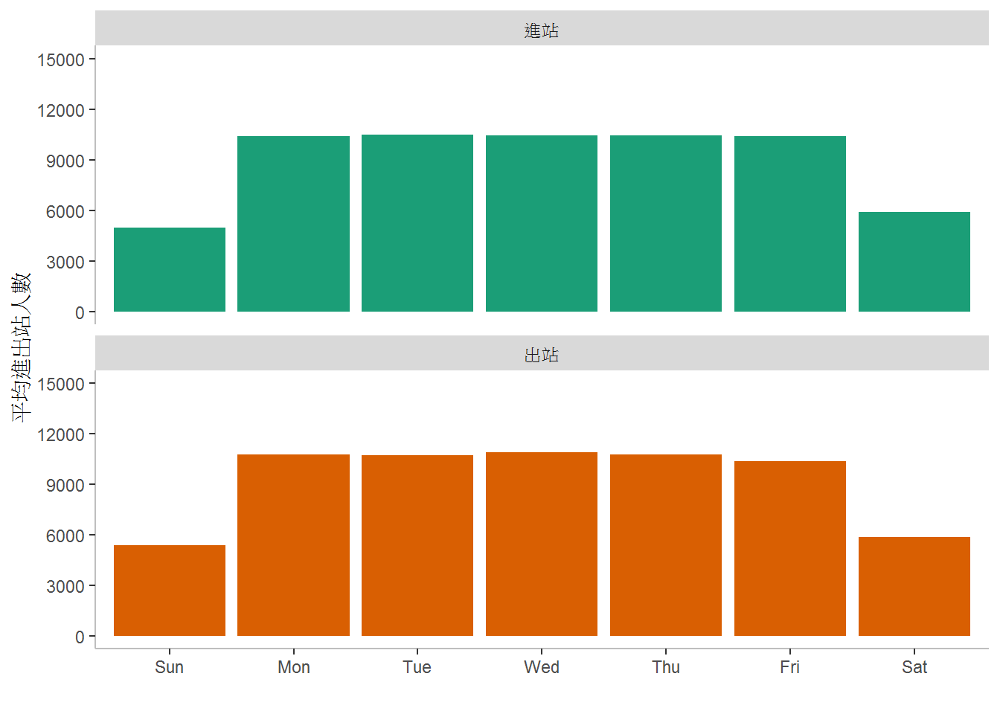
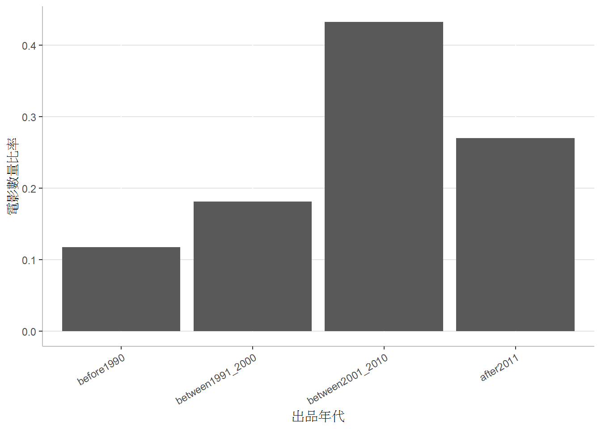

Chapter 7 利用R語言進行基本的統計分析
課程簡介
課程簡介
載入所需的套件
library(tidyverse)
library(lubridate)讀取日空氣品質指標檔案
df <- read.csv("AQI_data_2019_07_26.csv", stringsAsFactors = FALSE)資料的清理
- 移除AQI遺漏的資料
- 將日期改為Date資料型態
df <- distinct(df) %>%
filter(!is.na(AQI)) %>%
mutate(MonitorDate=as.Date(MonitorDate))7.1 描述性統計
7.1.1 測量資料的集中趨勢
當有大量資料時，會希望用一個最具有代表性的數值來表示這些數值。此時，在統計上通常一般會使用平均數(mean)或中位數(median)表示這些資料。以新店偵測站為例，如果要選擇一個數值代表該偵測站今年(2019年)一月到六月測得的空氣品質指標：
- 取出新店偵測站2019年一月到六月測得的空氣品質指標
aqi_data <- filter(df, SiteName=="新店") %>%
filter(MonitorDate>=as.Date("2019/01/01") & MonitorDate<=as.Date("2019/06/30"))資料的前五筆與後五筆，什麼樣的資料最有代表性？
| MonitorDate | AQI |
|---|---|
| 2019-06-30 | 51 |
| 2019-06-29 | 61 |
| 2019-06-28 | 51 |
| 2019-06-27 | 41 |
| 2019-06-26 | 50 |
| 2019-01-05 | 74 |
| 2019-01-04 | 40 |
| 2019-01-03 | 29 |
| 2019-01-02 | 31 |
| 2019-01-01 | 27 |
- 平均數 (所有的資料加總後，除以資料個數)
mean(aqi_data$AQI)## [1] 54.40936- 中位數 (所有的資料依大小順序排列後，取出位於中間的資料)
median(aqi_data$AQI)## [1] 477.1.2 測量資料的離散程度
除了以一個最具有代表性的數值表示整體資料之外，對於資料還需要了解它們的離散情形，也就是具有代表性的資料範圍。一般統計學上，常用來測量資料離散程度的方式有全距、四分位距、變異數和標準差。以下仍以新店偵測站今年一月到六月的空氣品質指標資料為例，計算上述的數值：
- 全距(range) (資料的最大值減最小值)
max(aqi_data$AQI) - min(aqi_data$AQI)## [1] 158- 四分位距(interquartile range) (資料的第三四分位數減第一四分位數)
IQR(aqi_data$AQI)## [1] 28另一種寫法，利用quantile()計算出第三四分位數和第一四分位數
quantile(aqi_data$AQI, 0.75) - quantile(aqi_data$AQI, 0.25)## 75%
## 28- 變異數 (資料與平均數之間的差稱為誤差，誤差平方的平均數便是變異數)
var(aqi_data$AQI)## [1] 575.8314- 標準差 (變異數的平方根)
sd(aqi_data$AQI)## [1] 23.99649討論
不同的資料離散程度測量方式有不同的特質與適用時機，請說明這些測量方式的限制與適用情形。
7.1.3 偏態與峰態
計算偏態與峰態，請先安裝與載入套件e1071
install.packages("e1071")library(e1071)偏態是測量資料與平均數相比，小的數值較多或大的數值較多的，如果資料愈接近對稱，偏態值便為0，如果左偏態(左側的尾部較長)，偏態值為負；反之右側的尾部較長，偏態值為正。如以下利用直方圖呈現新店偵測站今年一月到六月的空氣品質指標資料的圖形為例，大家可以猜想這個資料的偏態值為正或負？ 
偏態值的計算
skewness(aqi_data$AQI)## [1] 1.745678峰態是表示資料的分布較狹窄或平坦，較狹窄的資料分布，其峰態為正；反之，較平坦的話，則為負。峰態的計算如下：
kurtosis(aqi_data$AQI)## [1] 4.4152387.1.4 小結
描述性統計測量資料X的若干特性，包括：
- 集中趨勢
- 平均數 (
mean(X)) - 中位數 (
median(X))
- 平均數 (
- 離散程度
- 全域 (
max(X)-min(X)) - 四分位距 (
IRQ(X)或quantile(X, 0.75)-quantile(X, 0.25)) - 變異數 (
var(X)) - 標準差 (
sd(X))
- 全域 (
- 偏態 (
skewness(X)) - 峰態 (
kurtosis(X))
** 練習 ** 本課程提供某一個對不同推薦策略的研究結果user_text.xlsx，每一個Observation包含14個Variables，UserID是使用者編號，involvement、diversity和openness是三種人格特質。請讀取這個檔案，並設法運用描述性統計分析這個檔案中的三種人格特質。
## New names:
## * `` -> ...1## [1] "平均數為30.6472602739726"## [1] "中位數為31"## [1] "全距為40"## [1] "四分位距為12"## [1] "變異數為73.8029821588288"## [1] "標準差為8.59086620538516"## [1] "偏態為-0.29670514141235"## [1] "峰態為-0.381413269585126"7.2 資料相關性
以下是某三個監測站X1, X2, X3的今年一到六月的空氣品質資料。請問X1與其他兩個監測站彼此間的相關程度如何？也就是是否有當X1的資料愈大時，X2的資料也愈大的現象，或是相反的，X1的資料愈大時，X2的資料卻愈小，或者兩者之間沒有關係。
## [1] 27 31 29 40 74 30 31 28 33 61 60 25 31 40 48 47 74
## [18] 69 41 66 79 75 70 52 33 34 41 72 58 50 44 97 55 51
## [35] 73 60 34 31 31 33 32 43 37 69 33 36 42 62 63 29 36
## [52] 39 35 44 81 43 39 91 77 45 51 41 80 47 49 32 67 87
## [69] 93 77 64 74 48 76 60 104 90 45 40 48 40 41 84 61 60
## [86] 46 67 47 49 52 54 46 90 122 140 112 60 43 46 36 54 74
## [103] 44 97 177 44 63 87 50 58 43 77 53 36 71 71 47 49 42
## [120] 49 41 36 44 39 34 122 74 67 34 40 42 74 37 42 46 45
## [137] 67 45 41 45 48 49 29 30 28 67 74 47 37 29 25 30 31
## [154] 55 41 126 61 122 44 64 48 46 36 19 30 30 50 41 51 61
## [171] 51## [1] 12 21 21 49 78 24 34 32 25 63 71 53 43 27 43 45 83
## [18] 77 42 67 79 74 80 53 23 34 34 81 64 54 64 92 61 54
## [35] 90 79 40 23 17 15 33 38 39 83 20 11 42 71 71 36 41
## [52] 20 41 40 106 47 33 105 88 47 60 42 90 30 50 36 71 67
## [69] 62 69 43 43 46 86 63 85 99 52 26 34 56 42 76 64 70
## [86] 42 57 30 52 66 43 56 64 91 105 87 71 45 35 51 64 53
## [103] 58 61 74 60 72 70 48 46 52 65 62 35 76 39 25 34 36
## [120] 29 42 35 29 33 31 55 77 76 52 39 37 56 38 40 30 42
## [137] 53 46 31 29 32 56 27 42 38 46 47 47 38 31 30 28 29
## [154] 47 40 46 50 64 70 57 53 44 31 40 27 42 38 35 40 53
## [171] 36## [1] 26 24 20 21 19 27 28 27 27 29 24 22 25 30 27 48 34 28 30 30 64 61 54
## [24] 51 31 26 32 39 34 32 27 27 24 27 35 32 36 26 27 25 23 23 24 20 25 29
## [47] 21 36 50 19 31 26 32 32 30 26 29 28 30 31 32 32 35 41 26 28 35 60 54
## [70] 47 34 44 49 54 32 23 33 41 29 33 27 31 32 44 63 39 39 35 33 28 33 32
## [93] 32 47 58 51 45 31 36 33 31 38 29 32 36 39 52 60 49 32 22 17 37 32 47
## [116] 37 37 38 26 33 30 26 27 26 21 18 37 52 38 28 34 49 46 32 32 38 37 23
## [139] 23 32 30 19 23 21 22 17 11 19 25 26 24 16 23 26 41 51 50 31 19 32 33
## [162] 33 38 35 24 26 26 23 23 23 26直接觀察數據並不容易判斷，如果畫成圖形可能比較容易觀察,。將每一個Observation畫為圖形上的一個點，觀察這些點形成的樣式是否接近直線以及其上揚或下抑的趨勢。
lm1 <- lm(X2~X1, aqi_data_set)
ggplot(aqi_data_set) +
geom_point(aes(x=X1, y=X2), color="navyblue") +
geom_abline(aes(intercept=lm1$coefficients[1], slope=lm1$coefficients[2])) +
scale_x_continuous(breaks=seq(0, 200, 25), limits=c(0, 200)) +
scale_y_continuous(breaks=seq(0, 200, 25), limits=c(0, 200)) +
labs(x="X2監測站AQI值", y="X1監測站AQI值") +
theme(panel.background = element_blank())lm2 <- lm(X3~X1, aqi_data_set)
ggplot(aqi_data_set) +
geom_point(aes(x=X1, y=X3), color="firebrick") +
geom_abline(aes(intercept=lm2$coefficients[1], slope=lm2$coefficients[2])) +
scale_x_continuous(breaks=seq(0, 200, 25), limits=c(0, 200)) +
scale_y_continuous(breaks=seq(0, 200, 25), limits=c(0, 200)) +
labs(x="新店AQI值", y="X2監測站AQI值") +
theme(panel.background = element_blank())
圖形分布愈趨近於往上的直線者，兩者資料的相關性愈趨近於1。
或是利用cor()函數計算兩者資料的相關性
cor(aqi_data_set$X1, aqi_data_set$X2)## [1] 0.7145252cor(aqi_data_set$X1, aqi_data_set$X3)## [1] 0.3989189練習 比較前面對不同推薦策略的研究結果中的三種人格特質彼此間的相關性。
7.3 比較兩組資料的平均數
以下分別取出去年(2018年)和今年(2019年)一到六月新店偵測站的AQI指標值，計算兩段時間的平均值
y2018.df <- df %>%
filter(MonitorDate>=ymd("2018/01/01") & MonitorDate<=ymd("2018/06/30")) %>%
filter(SiteName=="新店")
print(paste0("2018年一到六月新店偵測站的AQI指標平均值", mean(y2018.df$AQI)))## [1] "2018年一到六月新店偵測站的AQI指標平均值67.7"y2019.df <- df %>%
filter(MonitorDate>=ymd("2019/01/01") & MonitorDate<=ymd("2019/06/30")) %>%
filter(SiteName=="新店")
print(paste0("2019年一到六月新店偵測站的AQI指標平均值", mean(y2019.df$AQI)))## [1] "2019年一到六月新店偵測站的AQI指標平均值54.4093567251462"df %>%
filter((MonitorDate>=ymd("2018/01/01") & MonitorDate<=ymd("2018/06/30"))|(MonitorDate>=ymd("2019/01/01") & MonitorDate<=ymd("2019/06/30"))) %>%
mutate(Year=factor(year(MonitorDate))) %>%
ggplot(aes(x=AQI, color=Year)) +
geom_density() +
geom_vline(xintercept=mean(y2018.df$AQI), color="green") +
geom_vline(xintercept=mean(y2019.df$AQI), color="blue") +
scale_color_manual(values=c("green", "blue"))
t.test(y2018.df$AQI, y2019.df$AQI)##
## Welch Two Sample t-test
##
## data: y2018.df$AQI and y2019.df$AQI
## t = 4.6457, df = 341.18, p-value = 4.846e-06
## alternative hypothesis: true difference in means is not equal to 0
## 95 percent confidence interval:
## 7.663549 18.917737
## sample estimates:
## mean of x mean of y
## 67.70000 54.40936t.test(y2018.df$AQI, y2019.df$AQI, alternative="greater")##
## Welch Two Sample t-test
##
## data: y2018.df$AQI and y2019.df$AQI
## t = 4.6457, df = 341.18, p-value = 2.423e-06
## alternative hypothesis: true difference in means is greater than 0
## 95 percent confidence interval:
## 8.572177 Inf
## sample estimates:
## mean of x mean of y
## 67.70000 54.40936